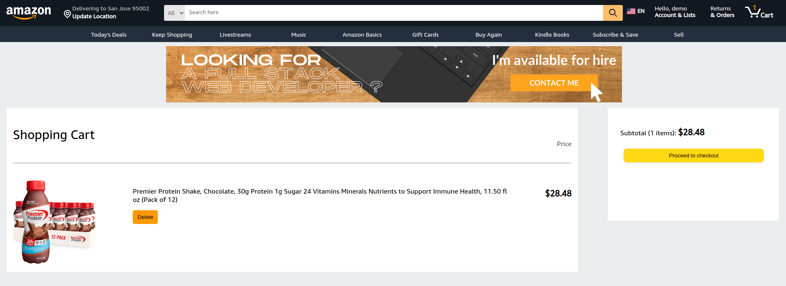

Amazon Clone
The homepage consists of working carousels that display a variety of products. Products are also separated by categories that can be seen in the homepage as well.
Users can login with an account or sign up with a new account. Custom validation errors for when users input information that is either incorrect or incorrectly formatted.
Active search bar that queries through database of products and displays relevant products with active links for each product.
Product show page that displays information for a single product including the product name, description, dynamically calculated ratings, and the product reviews in the bottom of the page.

Users are able to purchase products with a dynamic cart item number that is located inside the cart icon. The number of cart items are kept track in redux state. Cart items can either be deleted or purchased once the user clicks the proceed to checkout button which will lead them to a checkout page, emptying the cart.
Only users who are logged in can write reviews on a product. The reviews include a 5 star system, a title, and a body. Users can also edit the reviews they wrote. Reviews can only be deleted by the author that wrote it, but reviews can be viewed by all users.
Compass Itinerary Planner
Users can login with an account or sign up with a new account. Custom validation errors for when users input information that is either incorrect or incorrectly formatted. Users can upload a profile image with their profile details.
User must be logged in to create an itinerary. Users can upload an itinerary image with their itinerary details.
Users can view other itineraries with or without being logged in. The itinerary information displayed on the index page is the itinerary name, description, and the author of that itinerary.
A profile page has a photo of the user, a bio that can be edited, and 2 separate itinerary tabs. The first tab shows all the itineraries created by the user, and the second tab shows all the itineraries liked by the user.
After creating an itinerary, users are directed to the itinerary edit page. In this page, there are 3 parts of the itinerary that can be filled out. The first part captures events, the second covers transportation, and the third covers housing information.
Similar to the login/signup forms, there are validation errors for the itinerary forms including events, transportations, and housing. Users must input information in a certain format to save the 'event' to the itinerary.
Once an event is created, users can create more events or edit old events. The itinerary itself can also be edited or deleted.
There is an itinerary show page that will display all the itinerary information in a practical format. Events, transportations, and housing are colored coded as well for seamless user readability. All events are categorized chronologically for users to see what they have planned day to day. In this page, users can 'like' the itinerary and this liked itinerary will show up in their profile page under the 'liked itineraries tab'

Zombie Run
The goal of the game is to survive the zombie apocalypse.
Users can use the 'wasd' keys to move the player around the map.
Users can also click the left mouse button to shoot the zombies.
Red zombies give 10 points, blue zombies 20 points, black zombies 30 points, and green zombies 50 points.
As the rounds progress, more and more zombies will spawn.
There is an easy mode and a hard mode.
In easy mode, zombies have decreased damage, speed, and the player has an increased rate of fire and in addition
the red zombies won't shoot at you.
In hard mode, zombies have increased damage, speed, and the player has a decreased rate4 of fire and in addition
the red zombies will shoot at the player.